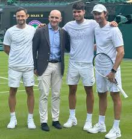
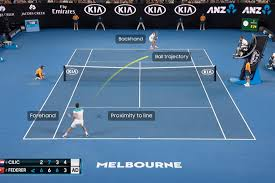

Our Story
TennisFeedHQ was founded in 2018 by a group of tennis enthusiasts and former players who saw a need for a more comprehensive, data-driven approach to tennis coverage. What began as a small blog has grown into one of the most trusted sources for tennis news, analysis, and statistics.
Our team combines decades of experience in professional tennis with cutting-edge data analysis to bring you insights you won't find anywhere else. We're proud to serve tennis fans in over 120 countries worldwide.

Our Mission
At TennisFeedHQ, we're committed to delivering:
- Accurate, timely rankings and tournament results
- In-depth player statistics and performance analysis
- Expert commentary from former players and coaches
- Comprehensive coverage of ATP, WTA, and junior tours
We believe tennis deserves the same level of statistical sophistication and analytical depth as other major sports.

Meet Our Team
The passionate professionals behind TennisFeedHQ
Sarah Johnson
Founder & Editor-in-Chief
Former WTA player and sports journalist with 15 years of experience covering tennis.
Michael Chen
Head of Data Analysis
Data scientist and former college tennis player who developed our proprietary ranking algorithms.
Elena Rodriguez
Tournament Correspondent
On-site reporter covering all Grand Slams and ATP/WTA 1000 events since 2019.
Our Core Values
Excellence
We strive for the highest standards in our reporting, analysis, and data accuracy.
Integrity
We maintain editorial independence and provide unbiased coverage of all players and tournaments.
Passion
Our love for tennis drives everything we do, from detailed match analysis to player profiles.
Innovation
We're constantly developing new ways to analyze and present tennis data to our readers.